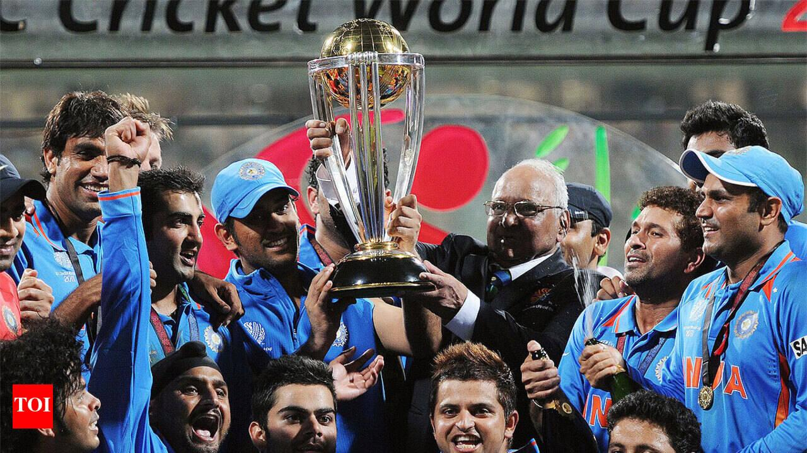

Mahendra Singh Dhoni
2. Early Life
- Mahendra Singh Dhoni was born on 7 July 1981 in Ranchi, Jharkhand.
- He was raised in a middle-class family and showed an early interest in sports, particularly cricket and football.
- Dhoni's father, Pan Singh, worked in junior management positions in MECON, and his mother, Devaki Devi, is a homemaker.
- He attended DAV Jawahar Vidya Mandir, where he excelled in sports and was the goalkeeper for his school football team.
- Dhoni's cricketing journey began when he was selected for the Bihar U-19
3. Career

- 2004: Made his ODI international debut against Bangladesh.
- 2005: Made his Test debut against Sri Lanka.
- 2007: Became captain of India's T20 team.
- 2007: Led India to victory in the ICC T20 World Cup.
- 2011: Led India to victory in the ICC Cricket World Cup.
- 2013: Led India to victory in the ICC Champions Trophy.
4. Achievements

- First captain to win all three major ICC trophies (T20 World Cup, Cricket World Cup, Champions Trophy).
- Won five IPL titles as Chennai Super Kings captain (2010, 2011, 2018, 2021 and 2023).
- Known for his calm demeanor and exceptional leadership skills.
- Holds numerous records in international cricket.